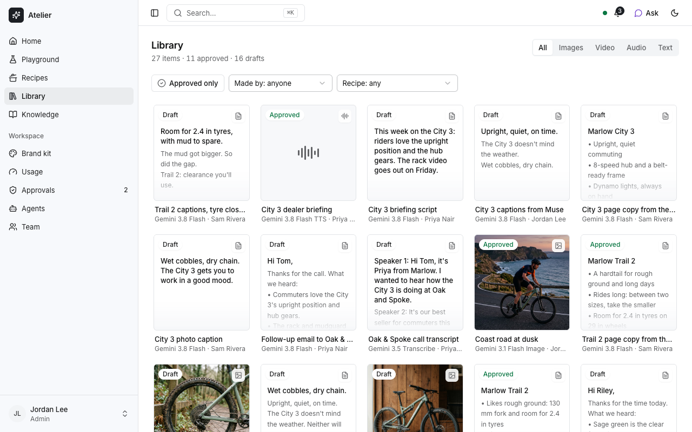
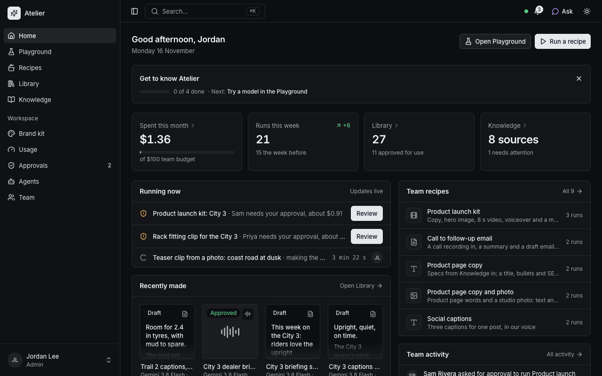
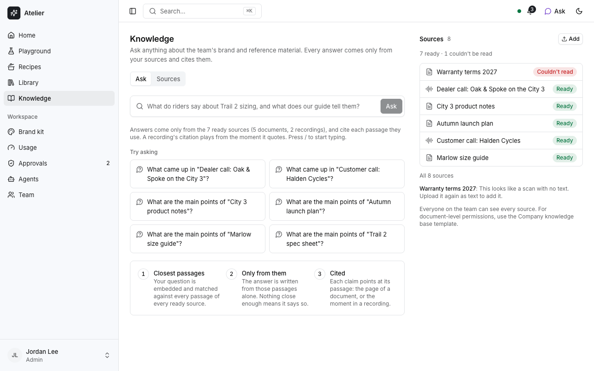
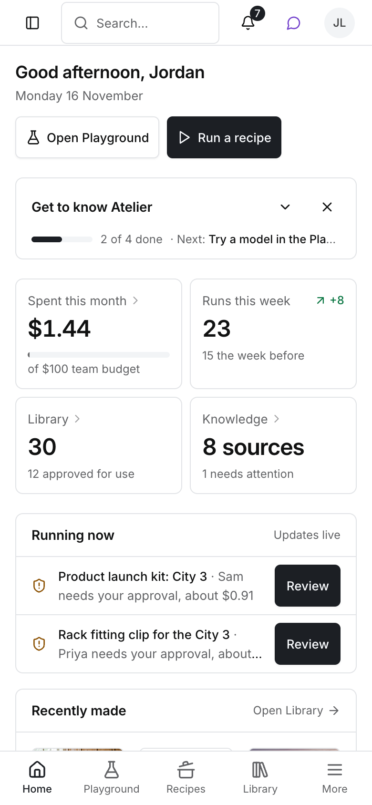

An AI studio for a business team: try every Xano AI model, save what works as recipes, keep everything you make, ask your own documents, and stay inside a budget.




Text, images, video, speech, music and transcripts, on any model in the live catalog. Compare two models; see the time, usage and cost of each.
Chain steps into a form anyone can run: the Product launch kit makes copy, a hero image, a clip, a voiceover and a music bed in one go.
Every output with its prompt, model, settings, maker and cost. Drafts until someone approves them for use.
Add PDFs, notes and call recordings. Ask answers only from them and cites each passage; a recording plays from the moment it quotes.
A monthly budget for the team and each person, an approval line, and a price table admins edit. Every model call passes the same gate.
Easel, the in-app assistant, and Claude, ChatGPT or your own code use the same eight tools, with the person's own budget.
git clone https://github.com/xano-community/atelier-ai-studio
cd atelier-ai-studio
npm install
npm run xano:deploy # the backend on the Xano Engine on your machine, seeded
npm run dev # the appNo account is needed to browse the seeded studio. To run models, sign in once with npx @xano/sdk login before you deploy: calls use your Xano AI credits. For a cloud link that works with ChatGPT and Claude, run npm run xano:deploy:ephemeral.
Clone https://github.com/xano-community/atelier-ai-studio, read its README and AGENTS.md,
run it on the Xano Engine, and sign in as Jordan Lee. Then add a recipe step
kind following "Extend it" in the README.| Role | Can |
|---|---|
| admin | Everything a member can, plus budgets, the approval line, prices, Usage and the team |
| member | Run the Playground and recipes, make recipes, add Knowledge sources, approve Library items. A video, or a run above the line, waits for an admin |
| guest | See approved Library items and ask Knowledge. Nothing else runs |
| Route | Who | Enforces |
|---|---|---|
POST /api:studio/runs | member | The spend gate, the approval line, a run key |
POST /api:studio/recipes/{slug}/run | a person's agent key | The same gate; Idempotency-Key returns the first run |
GET /api:library/assets | everyone | Guests see approved items only |
POST /api:library/assets/{id}/approve | member | Records who approved it and when |
POST /api:knowledge/sources | member | Files up to 20 MB, read once and embedded |
POST /api:knowledge/ask | everyone | Answers cite only the passages they were given |
GET /api:studio/usage, PATCH /budgets | admin | Totals add up to the settled ledger |
The README lists the main routes.